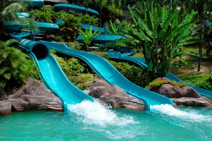

The Cotswolds is a very scenic area of the UK. The area is dotted with small villages. Each village has its own personality, although every one seems to have a small but beautifully formed church and an interesting pub. The drive through the Cotswolds is an opportunity for photographs.
We will visit the village of Upper Norton to spend some time walking near the River Rye. There is a park within a short walk of the river where families can enjoy the activities. We have arranged a visit to the Church of Saint Peter in Upper Norton. The church is famous for its wonderful stained glass windows. The village post office also has many original features from the 19th century and is worth a visit. When you go in to the post office, it seems like you have stepped back in time. Children (and adults) will enjoy looking at (and tasting) the array of sweets on display in glass jars. The post office sells more sweets than it does postage stamps.
After the morning in the village, passengers will have time for a lunchtime meal at the village pub. The local beer is to be recommended - for those who like a pint.
After leaving Upper Norton, the tour will make its way to the theme park.
The afternoon will be spent at the Scorpion Theme Park - there is a huge variety of rides and attractions to experience and they are suitable for all ages.
The tour will return to Hickley in the evening, dropping passengers off at their collection point on the way back.